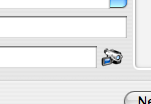

Using Scanners With Books
If you have a barcode scanner or an iSight camera, you can use it to scan barcodes for online lookups. Books is compatible with any barcode scanner that emulates a keyboard. If you're looking for a solid but cheap scanner, we highly recommend looking for a neutered Cue:Cat online at places like eBay. To use these kinds of scanners, click the ISBN field and scan the barcode. Books will convert UPC barcodes to ISBN numbers as required, so all you need to do is click the Quickfill button after scanning.
If you have an iSight camera and would like to use it, click the camera lookup icon next to the ISBN field to bring up the camera window.

Camera Lookup Icon
[Describe camera operation]
Did You Know?
The camera scanning feature is designed to work with Apple's iSight cameras, but it is compatible with other Firewire video cameras, such as portable home video recorders. If you have such a camera and would like to use it with Books, the instructions above still apply. We can't guarantee that it will work perfectly, but it might work better than you expect.